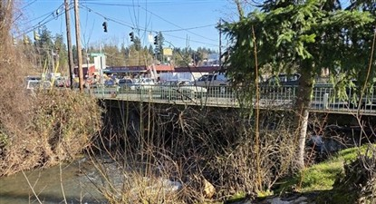

Your teammates' exercise material is below. You should see their
bridge photograph and their response. Each AUXC who submitted an image
should have at least one included.
If you hover over an image and it resizes slightly, this indicates
that this is not the submitted size. You can click to see the original,
full-sized image. Use the browser's back button to return to this
check-in listing page from the full-sized image.
If latitude and longitude were included, I've linked to a map to
show where the picture was taken from. The map centres on the provided
location - so you may have to look for the bridge close by.
All other simple check-ins have been recorded, so if you do not see
your check-in sentence - rest assured: I have it and it has been added
to the roster list for week 168.
Your exercise requirements this week were to:
Find a bridge which you can SAFELY access or view on foot.
Conduct a layperson's inspection of the bridge and document it on an ICS-213
Photograph the bridge, or a detail of the bridge.
Bundle all this up and send it in a message to CLACKAMAS-WEEKLYNET
Individual AUXCs' bridge images and observations
Note that if an AUXC checked in through multiple RMSs, then each check-in
sentence is provided at the top of their information.
Jump to a specific AUXC's check-in material:
168, KI7QIB, VARA FM, KD7ZDO-11, 145.770, PORTLAND, MULTNOMAH, OR
Bridge in decent shape, although underside is covered with
graffiti. No pavement cracks, guardrail damage, or other damage
observed.
Photo is taken from about 20' WNW of the bridge looking due
East.

Original image size: 225 x 415 pixels, 96 dpi, 49.6 kbytes
168, KJ7JCR, VARA FM, W7BVT-10, 145.020, Lake Oswego, Clackamas, Oregon
The photo shows the Childs Road bridge over the Lake Oswego
canal. There has been no obvious erosion surrounding the bridge
abutments, and transitions between the bridge deck and the roadway
are smooth and without any cracks that would indicate relative
movement. Inspection of guardrail attachments to the bridge appear
solid, with no indications of movement or shifting. The beam
carrying utilities on the south side of the bridge is intact and
does not show any signs of damage or displacement.
Photo was taken about 40 feet from the south side of the bridge
facing approximately 15 degrees relative to magnetic north.
Coordinates were 45.3862,
-122.7204.
Original image size: 290 x 787 pixels, 96 dpi, 72.0 kbytes
168, KK7AOY, VARA FM, KD7ZDO-12, 441.425, Canby, Clackamas, Oregon
Photos looking NNE into Canby. Bridge crosses the
Molalla River.
Built in 1947 and was recently refurbished in 2025.
Roadway centerline is straight with no damage to road surfaces.
North bound lane side rail is bent but closer inspection shows no
sign of an impact or damage, just crooked assembly of rails and
weldments.
Original image (1) size: 1000 x 750 pixels, 72 dpi, 35.0 kbytes
Original image (2) size: 975 x 750 pixels, 72 dpi, 34.2 kbytes
168, W6RKT, VARA FM, K7LSC-10, 144.960, Battle Ground, Clark, WA
Hazel Grove Park, Oregon City. 45.3230,
-122.6269. Pedestrian Bridge. Photo looking south from
upstream side from 2 feet away.
Bridge appears to be in good condition, made of wood on concrete
footings. This bridge is only 2 feet off the ground so no protection
handrails are present, but there is a "felloe guard" (old wagon term
"hub of a wagon wheel) used to prevent wheels from going off the
edge, although the "felloe guard" (curb) was used to protect the
wagons felloe from damage from rubbing the side of the bridge.
The Hydro inspector, Bailey, was there at the time and was
disappointed that the water had gone down. Although we were promised
good weather, the fog had not yet lifted and it was 43 degrees.
Original image size: 320 x 240 pixels, 72 dpi, 40.0 kbytes
Sellwood Bridge crosses the Willamette River between Highway 43
and Sellwood. Sellwood Bridge meets Tacoma Avenue at 5th Ave SE.
The photo attached was taken facing west from the footpath
directly under the bridge on the east bank of the Willamette river
at: 45.4642,
-122.6632. The image was captured on Thursday
20260115T1158.
Generally, the bridge is in good condition. The decking is not
distorted and there is no visible cracking in any of the concrete
components. The steelwork and pylons are also in good condition. The
guardrails and lampposts are all in good, serviceable condition and
the roadway is sufficiently marked to divide traffic as
expected.
The interface between the bridge deck and the access roads are
in good condition. All expansion joints look normal.
The bridge anchors show no signs of wear.
The photograph shows the underside of the deck. The steelwork
appears to be rusty - but intentionally so. There are no missing
rivets nor bolts. There are small, filled holes in the bottom of the
concrete decking.
Original image size: 968 x 1068 pixels, 96 dpi, 108 kbytes


{kind=link}
{kind=link}
{kind=link}
{kind=link}